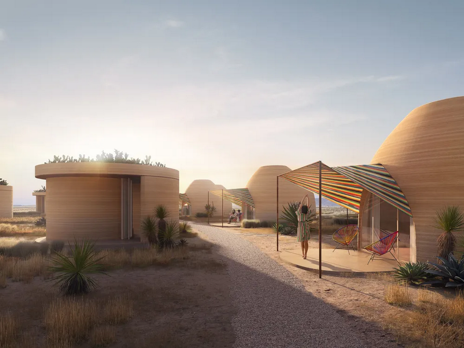
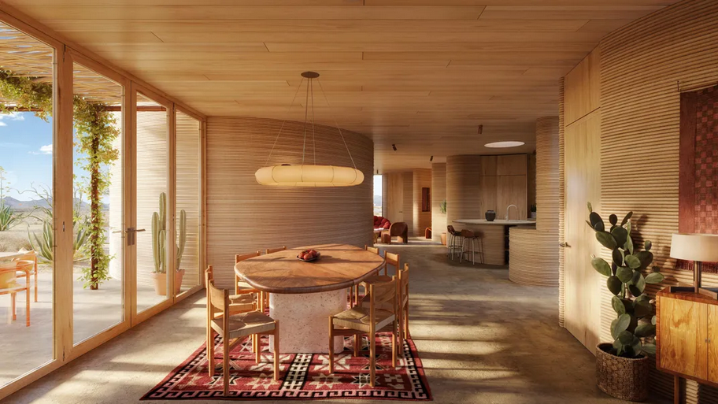
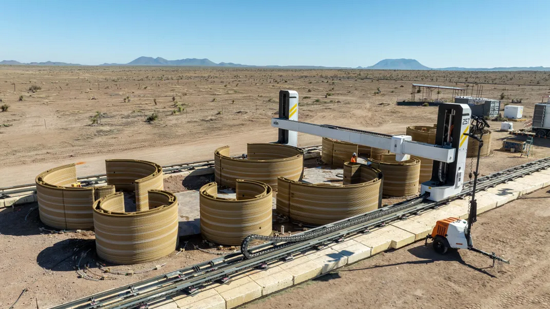

SMART NEWS
Olatunji Osho-Williams |
Staff Contributor |
September 30, 2024
Workers Just Started Building the World’s First 3D-Printed Hotel in the Texas Desert
In the dusty landscape surrounding the city of Marfa, a huge 3D printer is constructing 43 new rooms and 18 residential homes as part of an expansion of El Cosmico.
A rendering of the 3D-printed rounded hotel rooms
Everything’s bigger in Texas, where even 3D printers take on cosmic proportions. The Lone Star State will soon be the site of the world’s first 3D-printed hotel, El Cosmico, which has just begun construction in the desert north of Marfa.
Passersby won’t see the cranes and scaffolding that typically come with construction. Photos of the site show a massive 46.5-foot-wide and 15.5-foot-tall 3D printer laying layer upon layer of sand-colored material onto the foundations, creating curvy sand-colored walls. This behemoth of a machine, called the Vulcan, was created by Texas-based 3D printing and robotics company ICON.
When the Vulcan constructs walls, it looks “like an inkjet printer with a cartridge going back and forth,” Liz Lambert, El Cosmico’s owner, tells the Big Bend Sentinel’s Mary Cantrell.
Workers recently broke ground on the new El Cosmico north of Marfa, Texas
The project is a collaboration between Lambert, ICON and architects at Bjarke Ingels Group. Lambert seeks to expand the existing El Cosmico hotel, adding 43 new units and 18 residential homes on a new 40-acre property. According to a statement from ICON, 3D printing will allow for domes, arches, vaults and new versatility in architectural approaches.
“I’ve never been able to build with such little constraint and such fluidity ... just the curves, and the domes, and the parabolas,” Lambert tells Reuters’ Evan Garcia. “It’s a crazy way to build.”
Mockup images of the hotel’s interior show cream curvilinear walls and rounded wooden surfaces full of colors that reflect the surrounding desert. In addition to the hotel, El Cosmico will include several 3D-printed homes, which are currently priced for upwards of $2.29 million. Reuters reports that the hotel units will cost between $200 and $450 per night.
Company officials say the 3D printer allows architects to incorporate interesting features into their designs with fewer constraints
Olatunji Osho-Williams | READ MORE
Filed Under: 3D Printing, Architecture, Engineering, Mars, Moon, Outer Space, Sustainability, Technology, Texas, Travel
Source: https://www.smithsonianmag.com/smart-news/workers-just-started-building-the-worlds-first-3d-printed-hotel-in-the-texas-desert-180985166/